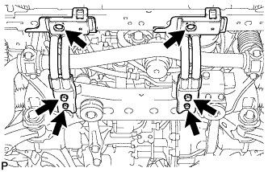

FRONT LOWER SUSPENSION ARM > REMOVAL |
| 1. REMOVE FRONT WHEEL |
| 2. REMOVE LOWER FRONT BUMPER COVER |
Remove the clip, 5 bolts and lower front bumper cover.
| 3. REMOVE NO. 1 ENGINE UNDER COVER SUB-ASSEMBLY |
Remove the 4 bolts.
 |
Unhook the No. 1 engine under cover from the vehicle body as shown in the illustration.
| 4. REMOVE FRONT SUSPENSION MEMBER BRACE SUB-ASSEMBLY |
|  |
Remove the 6 bolts and 2 member braces from the front frame assembly.
| 5. REMOVE FRONT STABILIZER END BRACKET |
 |
Remove the 4 bolts and 2 brackets from the lower arm.
| 6. REMOVE FRONT STABILIZER BAR |
 |
Remove the 4 bolts, 2 front stabilizer lower brackets and front stabilizer bar.
Remove the 2 front stabilizer link bushes and front stabilizer lower bracket bushes from the stabilizer bar front.
| 7. DISCONNECT FRONT SHOCK ABSORBER WITH COIL SPRING |
 |
Remove the bolt, nut and washer.
Disconnect the front shock absorber with coil spring from the suspension lower arm.
| 8. REMOVE FRONT NO. 1 SUSPENSION LOWER ARM SUB-ASSEMBLY LH |
 |
Remove the 2 bolts and disconnect the front lower ball joint attachment LH from the front axle.
Place matchmarks on the No. 2 camber adjust cam and toe adjust cam sub-assembly.
| *a | Matchmark |
Remove the nut, No. 2 camber adjust cam, camber adjust cam assembly, bolt, toe adjust cam sub-assembly, No. 2 toe adjust plate and front No. 1 suspension lower arm sub-assembly LH.
Remove the cotter pin and nut.
Using SST, remove the front lower ball joint attachment LH.